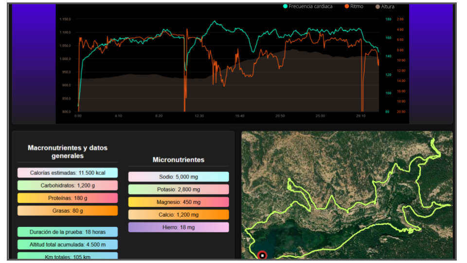
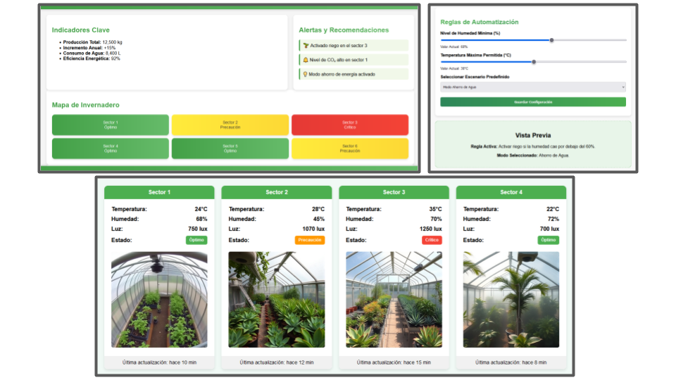
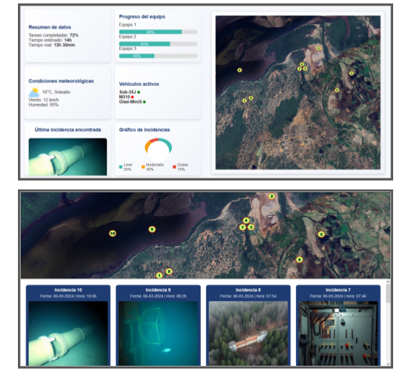
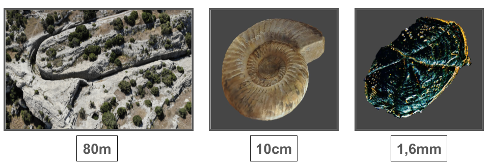
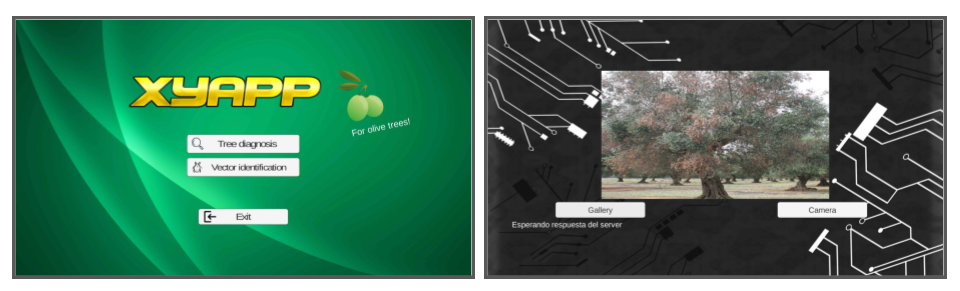

EndSim
Solución basada en IA diseñada para optimizar el rendimiento en pruebas deportivas de larga duración y alta resistencia, como en ultra-trail o rogaining. El objetivo era crear un modelo de IA que analizara las necesidades nutricionales de los atletas basándose en sus cargas de entrenamiento, sus métricas corporales y datos personales.
Esta herramienta permite simular pruebas, para realizar predicciones sobre estrategias técnicas y necesidades nutricionales.

AgroControlInt
Sistema capaz de monitorizar cultivos dentro de un invernadero, para posteriormente tomar decisiones automatizadas mediante modelos de IA en base a los datos recogidos. Principalmente, permite al usuario revisar con gran nivel de detalle cada uno de los elementos de la instalación, y establecer reglas de automatización. Con la información recogida, el sistema aprenderá cuáles son las acciones más efectivas para conseguir el mayor rendimiento con el mínimo consumo de recursos.
Puede utilizarse como herramienta tanto en el cultivo de plantas como en el de setas y hongos.

AutoProsp
Herramienta basada en la automatización de procesos, la cual está pensada para coordinar equipos en tareas de prospección dentro de grandes extensiones de terreno. Mediante datos tomados in-situ por el personal técnico, AutoProsp es capaz de combinarlos y realizar informes detallados de manera automática. También puede utilizarse en mantenimiento de grandes infraestructuras, gestión de emergencias, u otras tareas que impliquen el despliegue de medios y/o equipos humanos en un área geográfica determinada.
Dependiendo de la tarea o tareas a automatizar, AutoProsp es capaz de ahorrar hasta un 90% del tiempo empleado a la hora de combinar la información y extraer conclusiones relevantes.

Fotogrametría
La fotogrametría es una técnica que nos permite estudiar y definir con precisión la forma, dimensiones y posición en el espacio de un objeto cualquiera, mediante fotografías tomadas previamente. Dicho de otro modo, a partir de fotografías podemos obtener el modelo en tres dimensiones de un objeto.
A lo largo de los años he conseguido establecer una serie de metodologías que me permiten reconstruir de manera efectiva desde grandes elementos como edificios (mediante imágenes tomadas con drone), hasta elementos microscópicos. En la imagen aparecen tres ejemplos de reconstrucciones, siendo de izquierda a derecha:
Entrada excavada en piedra del Poblado Íbero del Castellar de Meca. (~80 metros de largo)
Fósil de ammonite. (~10 centímetros de diámetro)
Escama de pez. (~1,6 milímetros de diámetro)

XyApp
Fue la primera propuesta propia de proyecto que desarrollé, y tuve la gran suerte de poder hacerlo en el ICA-CSIC, junto al equipo de Alberto Fereres. Correspondió a mi periodo de prácticas universitarias, donde propuse la creación de un prototipo de ensemble que permitiera detectar la Xylella Fastidiosa en árboles, primeramente en olivos.
Mediante generación de imagenes artificiales para el set de entrenamiento, se consiguió un modelo completamente funcional capaz de detectar la enfermedad combinando imágenes de varios puntos del árbol. El prototipo de sistema constaba de modelo de IA (red convolucional), cliente móvil, y servidor.
